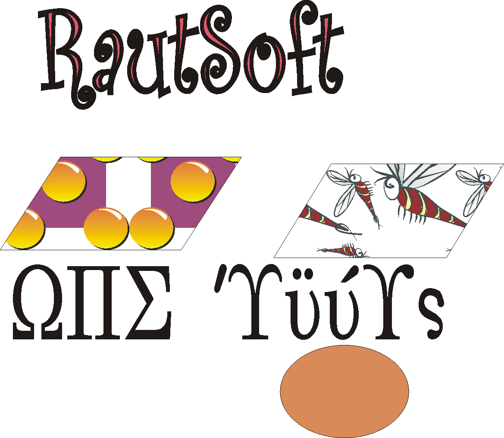
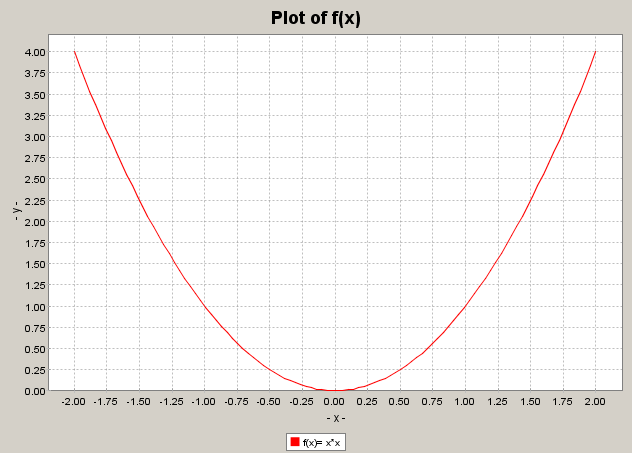

|
RautSoft Economics and Business Numerics | |||||||
| PREV NEXT | FRAMES NO FRAMES | |||||||

See:
Description
| Packages | |
|---|---|
| Jama | Jama = Java Matrix Package, a cooperative product of The MathWorks and the National Institute of Standards and Technology (NIST). |
| RautSoft.econometrics.dataset | This package contains Dataset Factory to read datasets from files and create dataset to pass into econometrics methods. |
| RautSoft.econometrics.general | This package contains general econometrics classes such as Regress, MaximumLikelihood, Probit, Logit, Tobit. |
| RautSoft.Interfaces | Contains various various interfaces such as FunctionOfOneVariable, FunctionOfManyVariables, VectorOfFunctionsOfManyVariables and MatrixOfFunctionsOfManyVariables. |
| RautSoft.math.approximation | This class contains various public static methods for Interpolation and Approximation methods. |
| RautSoft.math.calculus | The package contains two main classes, Integration and Differentiation, each containing several static methods that can perform perform integration and differentiation of a function of one or more variables. |
| RautSoft.math.functions | This class contains methods to create various orthogonal polynomials such as Hermite, Laguerre, Legendre, Chebyshev and also to calculate Chebyshev zeroes. |
| RautSoft.math.lp | This package contains implementation of adoptation of Simplex algorithm from Numerical Recipe and LpSolve package. |
| RautSoft.math.nlp | This package contains JNI implementations of two popular optimization packages (Donlp2 and tnc) written originally in C and JNI implementation is due to Professor Lakshmi K. Raut. |
| RautSoft.math.ode | This package contains classes to solve Ordinary Differential Equations using using Runge-Kutta Algorithm. |
| RautSoft.plot | This package contains two classes to plot chart and graphs of functions redefined and modified from JfreeChart. |
| RautSoft.util | This package contains various utility methods including various Probability Distributions Printing of arrays. |
| RautSoft Economics and Business Numerics |
Developed by
Lakshmi K. Raut
Copyright © 2000-2005, Lakshmi K. Raut
RautSoft Economics and Business Numerics is a java application package, developed by Professor Lakshmi K. Raut. The package is platform independent except for the features that use Java Native Interfaces such as the classes DonlpJava and BoundConOpt in the package RautSoft.math.nlp. The application uses a number of public domain packages and use of this package is subject to the license agreements mentioned in those packages, and in the license agreement of this package.
The current version of this application implements only a small subset of the packages in the RautSoft standalone GUI application. All packages could be, however, used in a java program.
Under Construction
The following sub packages are available.
This package contains Dataset Factory to read datasets from files and create dataset to pass into econometrics methods. The steps are. First create a Dataset object wither passing to the constructor a filename, or an array. Econometrics classes use XYDataset objects which has the first variable as y-variable and the rest as x-variables. To get a XYDataset object from the Dataset object, use getXYDataset() or getXYDatasetWithConstant if the first of the x-variables should be a constant term. It is possible to specify any of the variables of the Dataset object as y-variable and any of subset of the variables as x-variables.
This package contains general econometrics classes such as Regress,
MaximumLikelihood, Probit, Logit, Tobit. Currently only Regress,
MaximulLikelihood and Tobit are robust and Probit, and Logit may not work on
some datasets. In a future release, these procedures will be made more robust.
TO-DO: Hypothesis testing, and diagnostic tests.
Approximation: The classes and main
methods are: polint ratint, ...Differentiation: This class contains methods to calculate numerically the gradient
and Hessian of a function of one or many variables. Integration: This class contains methods to
do numerical integration of a function of one or many variable. ZeroFinder.rtsafe(FunctionOfOneVariable func,
FunctionOfOneVariable diff, double x1, double x2, double xacc): Solves a
non-linear equation, the user has to supply the first derivative of the
function analytically.Orthopoly: This class contains methods to
create various orthogonal polynomials such as Hermite, Laguerre, Legendre,
Chebyshev and also to calculate Chebyshev zeroes.Matrix: The documentation of Matrix class of Jama package DavidsonFletcherPowell: Computes the
unconstrained minimum of a FunctionOfManyVariables using the modified
version of Davidon-Fletcher-Powell algorithm.DonlpJava: This package contains JNI implementations of
two popular optimization packages (Donlp2 and tnc) written originally in C
and JNI implementation is due to Professor Lakshmi K. Raut.LBFGS: This package contains two classes to plot chart and graphs of functions redefined and modified from JfreeChart.
RautSoftChart: JFreeChartPanel: To run this package, please download and install Sun's Java 2 Platform Standard Edition 5.0 or later version.
To run a java program that uses RautSoftLib, make sure that the jar
files of this application such as RatSoftLib.jar are in the classpath. Assuming
that all the jar files are in the directory C:\RautSoft\lib, assuming that all
the class files are to be created in the directory C:\RautSoft\work\classes, and
assuming that your java source file is RautSoftEx1.java in the directory
C:\RautSoft\work\src, the following dos commands from the
dos prompt in the directory C:\RautSoft\work\src will do the job.
javac -d C:\RautSoft\work\classes -classpath C:\RautSoft\lib\RautSoftLib.jar;C:\RautSoft\lib\JFreePlot.jar RautSoftEx1.java set classpath=C:\RautSoft\lib\RautSoftLib.jar;C:\RautSoft\lib\JFreePlot.jar; C:\RautSoft\work\classes;%classpath% java RautSoftEx1
import static RautSoft.util.RautSoftUtil.*;
import RautSoft.econometrics.general.*;
import RautSoft.econometrics.dataset.*;
import static RautSoft.plot.RautSoftChart.*;
import RautSoft.Interfaces.*;
public class RautSoftEx1 {
public static void main(String[] argsv){
RautSoftTop();
FunctionOfOneVariable f = new FunctionOfOneVariable() {
public double value(double x){return x*x;} };
plotLegend = "f(x)= x*x";
plot(f , -2.0,2.0);
//creating an array to be used for econometric analysis
final int k = 2, n=250;
final double [][] data =new double[n][k+1];
for (int i=0;i<n;i++){
data[i][0]= 100*Math.random();
for (int j=0;j<k;j++){
data[i][j+1]=10*(j+1)*Math.random();
data[i][0] += 2*Math.sqrt(j+1)*data[i][j+1];
}
if (data[i][0] <=80) data[i][0]=0.0; //For LimDep analysis
}
Dataset dat= new Dataset(data);
String[] vLabel = {"Artificial", "X1 (random)","X2 (random)"};
String[] vName = {"Y", "X1","X2"};
dat.setVLabel(vLabel);
dat.setVName(vName);
//System.out.println(dat.print()); //this will print the dat object
Regress reg= new Regress(dat.getXYDatasetWithConstant());
reg.Compute();
System.out.println("OLS output:\n" +reg.getOutput() );
double [] beta=reg.getParameterEstimates();
System.out.println("Parameter Estimates");
for (int i=0;i<beta.length;i++)System.out.println(beta[i]);
MaximumLikelihood mle= new MaximumLikelihood(dat.getXYDatasetWithConstant());
mle.Compute();
System.out.println("MLE output:\n" +mle.getOutput() );
Logit logit= new Logit(dat.getXYDatasetWithConstant());
logit.Compute();
System.out.println("Logit output:\n" +logit.getOutput() );
Probit prob= new Probit(dat.getXYDatasetWithConstant());
prob.Compute();
System.out.println("Probit output:\n" +prob.getOutput() );
Tobit tob= new Tobit(dat.getXYDatasetWithConstant());
tob.Compute();
System.out.println("Tobit output:\n" +tob.getOutput() );
RautSoftBottom();
}
}
The following plot was displayed on a separate window. By rightclicking on it, one can save and do other operations.

*************************************************************** *************************************************************** * RautSoft Economics and Business Numerics : * * Saturday, April 30, 2005 11:26:59 PM PDT * Please direct your questions to Lakshmi Raut by sending * * email at lraut@fullerton.edu * *************************************************************** OLS output: RautSoft Economics and Business Numerics: Saturday, April 30, 2005 11:27:24 PM PDT *=*=*=*=*=*=*=*=*=*=*=*=*=*=*=*=*=*=*=*=*=*=*=*=*=*=*=*=*=*=*=*=*=*=*=*=*=*=*=*=*=*=*=*=*=*=*= The output from Regression Analysis =================================== Dependent Variable: Y Dependent variable label: Artificial number of observations = 250 number of variables = 3 The residual sum of squares = 693613.439853818 The Total sum of squares = 812567.3359851532 R-square = 0.14639266293803943 Ajusted R-square = 0.13948086263794257 ---------------------------------------------------------------------------------------------- The OLS parameter estimates: ============================ Variable Variable Parameter Standard T for H0: Name Label Estimate Error Parameter=0 Prob > |T| Constant Constant 10.165100 8.361944 1.215638 0.225288 X1 X1 (random) 2.580608 1.111926 2.320845 0.021113 X2 X2 (random) 3.621779 0.606829 5.968364 0.000000 ---------------------------------------------------------------------------------------------- *=*=*=*=*=*=*=*=*=*=*=*=*=*=* end of regression output=*=*=*=*=*=*=*=*=*=*=*=*=*=*=*=*=*=*=*=* Parameter Estimates 10.165099845160057 2.5806076102368896 3.621778904634027 MLE output: RautSoft Economics and Business Numerics: Saturday, April 30, 2005 11:27:25 PM PDT *********************************** The output from MLE =================================== Dependent Variable: Y Dependent variable label: Artificial number of observations = 250 number of variables = 3 The maximized Loglikelihood = -1259.117381 ---------------------------------------------------------------------------------------------- The MLE paramter estimates: =========================== Variable Variable Parameter Standard T for H0: Name Label Estimate Error Parameter=0 Prob > |T| Constant Constant 10.165101 8.311622 1.222998 0.222501 X1 X1 (random) 2.580604 1.105234 2.334893 0.020354 X2 X2 (random) 3.621780 0.603177 6.004502 0.000000 sigma normal pdf 52.673083 2.355609 22.360706 0.000000 ---------------------------------------------------------------------------------------------- Logit output: RautSoft Economics and Business Numerics: Saturday, April 30, 2005 11:27:33 PM PDT *********************************** The output from the Logit Model =================================== Dependent Variable: Y Dependent variable label: Artificial number of observations = 250 number of variables = 3 The maximized Loglikelihood = -159.411360 ---------------------------------------------------------------------------------------------- The paramter estimates from the Logit Model: ============================================ Variable Variable Parameter Standard T for H0: Name Label Estimate Error Parameter=0 Prob > |T| Constant Constant -1.466523 0.349878 -4.191525 0.000039 X1 X1 (random) 0.094052 0.044751 2.101684 0.036598 X2 X2 (random) 0.114837 0.025208 4.555609 0.000008 ---------------------------------------------------------------------------------------------- Probit output: RautSoft Economics and Business Numerics: Saturday, April 30, 2005 11:27:33 PM PDT *********************************** The output from the Probit Model =================================== Dependent Variable: Y Dependent variable label: Artificial number of observations = 250 number of variables = 3 The maximized Loglikelihood = -159.355231 ---------------------------------------------------------------------------------------------- The paramter estimates from the Probit Model: ============================================ Variable Variable Parameter Standard T for H0: Name Label Estimate Error Parameter=0 Prob > |T| Constant Constant -0.905386 0.209783 -4.315827 0.000023 X1 X1 (random) 0.057889 0.027212 2.127350 0.034386 X2 X2 (random) 0.071264 0.015272 4.666366 0.000005 ---------------------------------------------------------------------------------------------- Tobit output: RautSoft Economics and Business Numerics: Saturday, April 30, 2005 11:27:34 PM PDT *********************************** The output from the Tobit Model =================================== Dependent Variable: Y Dependent variable label: Artificial number of observations = 250 number of variables = 3 The maximized Loglikelihood = -850.120582 ---------------------------------------------------------------------------------------------- The paramter estimates from the Tobit Model: ============================================ Variable Variable Parameter Standard T for H0: Name Label Estimate Error Parameter=0 Prob > |T| Constant Constant -60.755565 17.805570 -3.412166 0.000753 X1 X1 (random) 4.687702 2.155410 2.174854 0.030594 X2 X2 (random) 6.358778 1.191178 5.338226 0.000000 sigma normal pdf 92.671698 6.640258 13.956038 0.000000 ---------------------------------------------------------------------------------------------- **************************************** * Total time used: 36.583 seconds * * The program ended at 11:27:36 PM PDT * ****************************************More examples are provided in the documentation of each package.
|
RautSoft Economics and Business Numerics | |||||||
| PREV NEXT | FRAMES NO FRAMES | |||||||